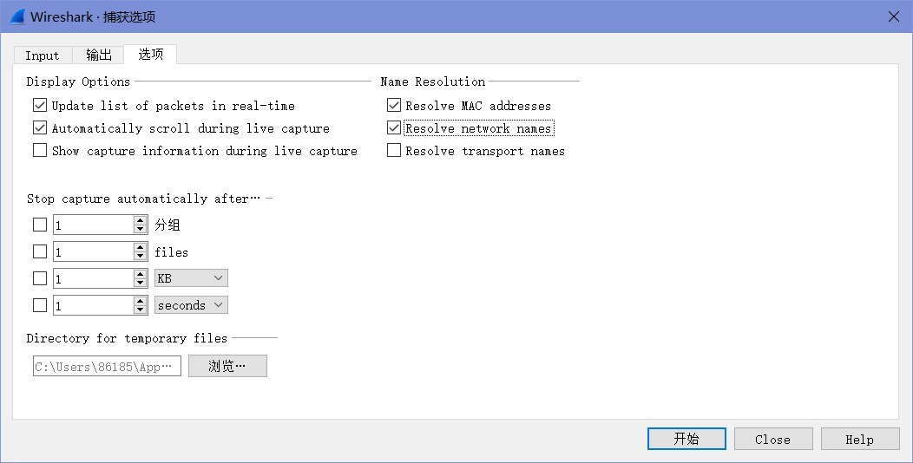

lab1-2 Wireshark-protocal layers
Lab1-2 Protocol Layers
1 Objective
了解如何在数据包中表示协议和分层。
2 Requirements
实验指导书中该部分分为Wireshark软件安装和wget（或curl）安装，Wireshark安装之前已经记录过了，这里就只写wget的获取了。
2.1 下载安装wget
前往GNU Wget 1.21.3 for Windows (eternallybored.org)下载wget，这里选择了1.21.3—64bit—ZIP。
2.2 配置环境变量
将文件解压到的路径添加至环境变量。
2.3 测试
若成功显示wget版本即说明安装成功。
3 Steps
Step 1: Capture a Trace
使用wget获取输入的URL的资源，如果状态代码为”200 OK“则说明获取成功，如下图。
关闭不必要的浏览器选项卡和窗口，通过最小化浏览器活动来阻止计算机获取不必要的web内容，避免在追踪过程中的偶然的流量。
启动Wireshark，用”tcp port 80“过滤器开始抓包，并在选项窗口里勾选”Resolve network names“。这个过滤器将只记录标准的网络流量，而不记录计算机可能发送的其他类型的包。勾选的作用是将把发送和接收数据包的计算机的地址转换为名称，这将帮助我们识别数据包是发送到计算机的还是计算机发送出去的。

抓包开始时，使用wget重复web获取，这次的报文就会在传输过程中会被Wireshark记录下来。
获取成功后，返回Wireshark并停止抓包。如果成功了的话，Wireshark窗口将显示多个包。捕获的包的个数取决于web页面的大小，通常为20到100个，至少有8个。如下图，本次共抓取了11个（正常包有8个）。
Step 2: Inspect the Trace
我们可以选中一个数据包来查看它的协议层。这里我们选择一个”Protocol“（协议）列为”HTTP“且”Info“（信息）列为”GET“开头的数据包，可以看到共四层协议，分别为以太网、IP(IPv4)、TCP和HTTP。
注意，顺序是从协议栈的底部向上的。这是因为当数据包沿着堆栈向下传递时，底层协议的头信息被添加到来自上层协议的信息前面。也就是说，下层协议在“线上”数据包中首先出现。
接下来找到对应从服务器到本机的响应的另一个”HTTP“数据包，这个包的Info字段中应该有“200 OK”，表示获取成功。与HTTP GET包对比，可以看到其有两个额外的部分，如下图所示。
第一个额外的部分写着“[2 Reassembled TCP Segments (2497 bytes): #6(1452), #7(1045)]”，它是关于如何将从服务器发往本机的数据包按顺序组合起来的（因为web响应是通过发送一系列数据包到计算机来实现的，标记为HTTP的数据包是web响应的最后一个数据包）。虽然这些数据包携带着部分HTTP相应，但当前他们每一个都显示有”TCP“。只有最后的包显示为具有HTTP协议时，它们才被组合成一个完整的 HTTP 响应。
第二个额外的部分写着”Line-based text data: text/html (2 lines)“，它描述的是所获取的网页的内容。这不是一个真正的协议，它是Wireshark正在生成的包内容的描述，以帮助我们理解网络流量。
Step 3: Packet Structure
To show your understanding of packet structure, draw a figure of an HTTP GET packet that shows the position and size in bytes of the TCP, IP and Ethernet protocol headers.
| Ethernet | IP | TCP | HTTP |
|---|---|---|---|
| 14B | 20B | 20B | 128B |
| Ethernet Header | Ethernet Payload | ~ | ~ |
| IP Header | IP Payload | ~ | |
| TCP Header | TCP Payload |
Step 4: Protocol Overhead
Estimate the download protocol overhead, or percentage of the download bytes taken up by protocol overhead. To do this, consider HTTP data (headers and message) to be useful data for the network to carry, and lower layer headers (TCP, IP, and Ethernet) to be the overhead.
可以通过对Destination列进行排序来只查看下载方向的数据包。数据包应该以一个描述为[SYN ACK]的短TCP包开始，这是连接的开始。接下来，是较大的TCP包（大约1到1.5KB）。最后一个是HTTP包（也可能以一个短的TCP包结束，它是结束连接的一部分）。
对于每个包，我们可以检查它以Ethernet/IP/TCP报头的形式有多少开销，以及它在TCP有效负载中携带了多少有用的HTTP数据。
我们依次选中数据包，可以看到下载过程数据总长度为：66 + 56 + 1506 + 1099 = 2727 bytes，HTTP数据长度为：1045 bytes，所以下载开销占比为：(2727-1045)/2727≈61.7％。
下载协议开销很重要，它保证了数据传输的正确性和可恢复性。因为这里我们的GET请求数据包较短，所以下载协议开销较大。额外的开销部分虽然不是定长，但是基本是在一个较为确定的范围内，只要GET请求的内容包括更多的信息，只要数据包足够大，额外开销的占比就会趋近于0。
Step 5: Demultiplexing Keys
解复用（Demultiplexing）：当数据包从交给上层进行处理时，需要找到正确的上层协议，这个过程就叫做解复用。
解复用键（Demultiplexing Keys）：在协议头中来指明上层协议的信息。
1. Which Ethernet header field is the demultiplexing key that tells it the next higher layer is IP? What value is used in this field to indicate “IP”?
如图：Type；0x0800。
2. Which IP header field is the demultiplexing key that tells it the next higher layer is TCP? What value is used in this field to indicate “TCP”?
如图：Protocol；0x06。
4 Explore on your own
Look at a short TCP packet that carries no higher-layer data. To what entity is this packet destined? After all, if it carries no higher-layer data then it does not seem very useful to a higher layer protocol such as HTTP!
下图就是一个不包含更高层数据的TCP数据包。
在TCP协议中，建立连接需要三次握手，结束连接需要4次挥手。这几次的数据传递均是不包括高层协议数据的，目的是为了确保连接建立的稳定和准确。
In a classic layered model, one message from a higher layer has a header appended by the lower layer and becomes one new message. But this is not always the case. Above, we saw a trace in which the web response (one HTTP message comprised of an HTTP header and an HTTP payload) was converted into multiple lower layer messages (being multiple TCP packets). Imagine that you have drawn the packet structure (as in step 2) for the first and last TCP packet carrying the web response. How will the drawings differ?
第一个包的首部中，Connection字段的值为：keep-alive，表明后续仍有数据。最后一个包请求头中Connection字段的值为：close，表明传输结束，同时最后一个包中还会包含FIN=1来请求关闭连接。
In the classic layered model described above, lower layers append headers to the messages passed down from higher layers. How will this model change if a lower layer adds encryption?
加密的目的是为了保密内容，所以加密的类型和加密密钥不能随着加密数据一同发送，而是应该在传输数据前根据加密协议进行协商确定。
In the classic layered model described above, lower layers append headers to the messages passed down from higher layers. How will this model change if a lower layer adds compression?
压缩的目的是为了节省传输流量，所以压缩的协议可直接在下层协议头中指明，便于接收方解压缩。